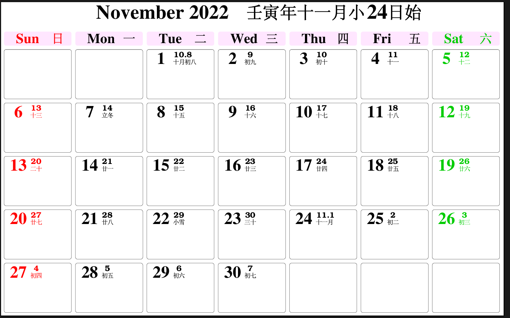
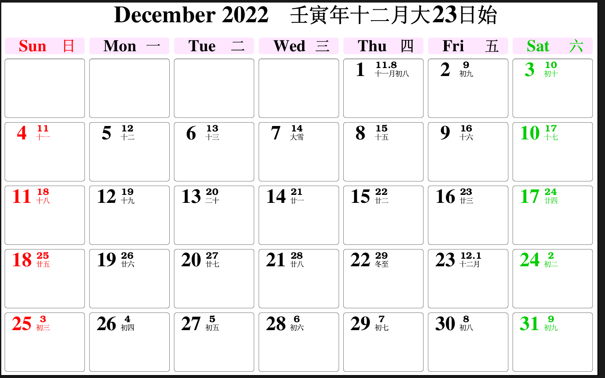
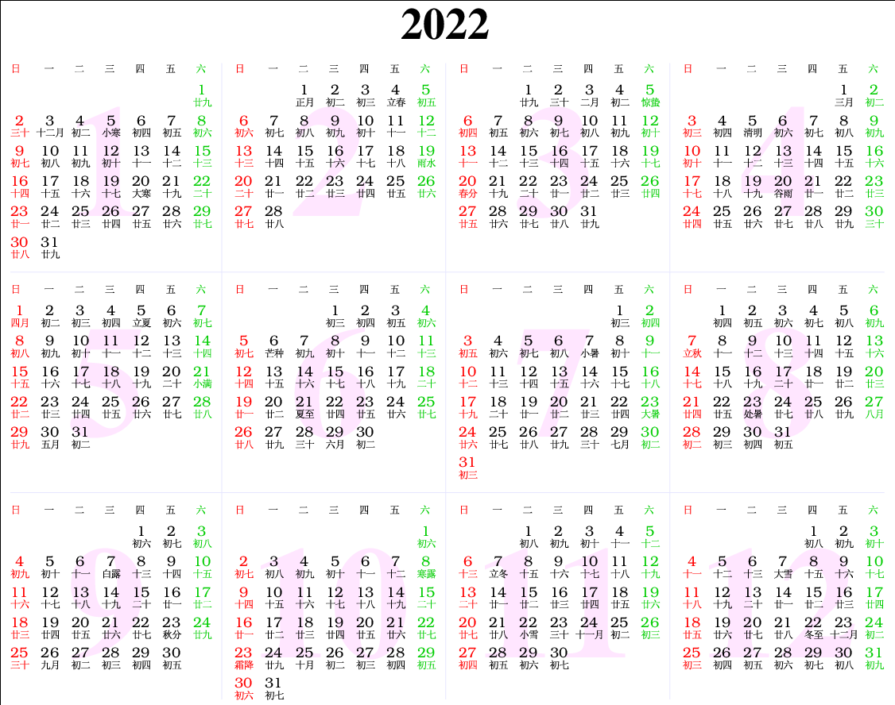
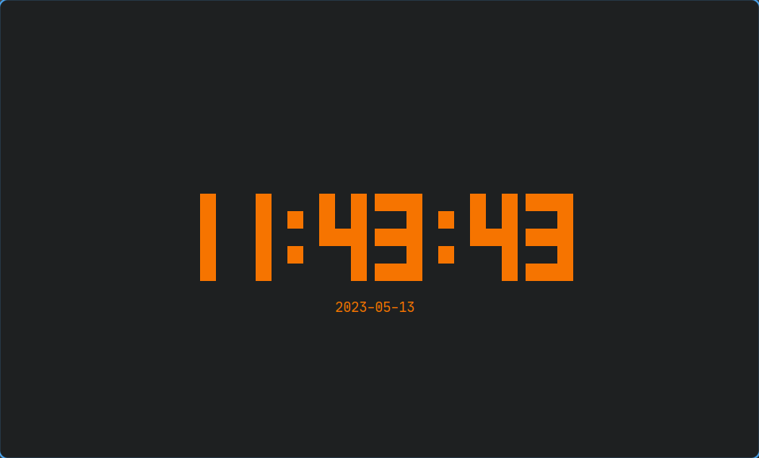

一些我用的软件清单
Table of Contents
1. 一些我用的小工具盘点
注，该文章将持续更新
创建时间 最后修改时间 2022-12-02 18:42:40 2023-05-13 12:27
1.1. 终端类
1.1.1. "绘图"
- lolcat
它是一个可以输出渐变彩色的工具，或许能让你的一些输出变得更加炫酷。它的工作依赖 ruby。
- cowsay
它能够将你所指定的字符整合进入一副字符画中。像下面一样：
______________ < hello world! > -------------- \ ^__^ \ (oo)\_______ (__)\ )\/\ ||----w | || ||或许这是一个输出通知的好工具
- figlet
这是一个用字符“绘制”字符（仅限英文）的工具，可以作出一些有趣的效果：
$ figlet "Hello World\!" _ _ _ _ __ __ _ _ _ | | | | ___| | | ___ \ \ / /__ _ __| | __| | | | |_| |/ _ \ | |/ _ \ \ \ /\ / / _ \| '__| |/ _` | | | _ | __/ | | (_) | \ V V / (_) | | | | (_| |_| |_| |_|\___|_|_|\___/ \_/\_/ \___/|_| |_|\__,_(_)
1.1.2. 与时间有关
- 日历
- cal
一个十分简洁的日历软件。 终端输出：
$ cal 十二月 2022 一 二 三 四 五 六 日 1 2 3 4 5 6 7 8 9 10 11 12 13 14 15 16 17 18 19 20 21 22 23 24 25 26 27 28 29 30 31 $ cal -y 2022 一月 二月 三月 一 二 三 四 五 六 日 一 二 三 四 五 六 日 一 二 三 四 五 六 日 1 2 1 2 3 4 5 6 1 2 3 4 5 6 3 4 5 6 7 8 9 7 8 9 10 11 12 13 7 8 9 10 11 12 13 10 11 12 13 14 15 16 14 15 16 17 18 19 20 14 15 16 17 18 19 20 17 18 19 20 21 22 23 21 22 23 24 25 26 27 21 22 23 24 25 26 27 24 25 26 27 28 29 30 28 28 29 30 31 31 四月 五月 六月 一 二 三 四 五 六 日 一 二 三 四 五 六 日 一 二 三 四 五 六 日 1 2 3 1 1 2 3 4 5 4 5 6 7 8 9 10 2 3 4 5 6 7 8 6 7 8 9 10 11 12 11 12 13 14 15 16 17 9 10 11 12 13 14 15 13 14 15 16 17 18 19 18 19 20 21 22 23 24 16 17 18 19 20 21 22 20 21 22 23 24 25 26 25 26 27 28 29 30 23 24 25 26 27 28 29 27 28 29 30 30 31 七月 八月 九月 一 二 三 四 五 六 日 一 二 三 四 五 六 日 一 二 三 四 五 六 日 1 2 3 1 2 3 4 5 6 7 1 2 3 4 4 5 6 7 8 9 10 8 9 10 11 12 13 14 5 6 7 8 9 10 11 11 12 13 14 15 16 17 15 16 17 18 19 20 21 12 13 14 15 16 17 18 18 19 20 21 22 23 24 22 23 24 25 26 27 28 19 20 21 22 23 24 25 25 26 27 28 29 30 31 29 30 31 26 27 28 29 30 十月 十一月 十二月 一 二 三 四 五 六 日 一 二 三 四 五 六 日 一 二 三 四 五 六 日 1 2 1 2 3 4 5 6 1 2 3 4 3 4 5 6 7 8 9 7 8 9 10 11 12 13 5 6 7 8 9 10 11 10 11 12 13 14 15 16 14 15 16 17 18 19 20 12 13 14 15 16 17 18 17 18 19 20 21 22 23 21 22 23 24 25 26 27 19 20 21 22 23 24 25 24 25 26 27 28 29 30 28 29 30 26 27 28 29 30 31 31 $ cal -h 用法： cal [选项] [[[日] 月] 年] cal [选项] <时间戳|月份名> 显示日历或部分日历。 不带参数时，显示当月日历。 选项： -1, --one 只显示一个月(默认) -3, --three 显示该日期前后三个月 -n, --months < 数字> 显示以日期所在月份开始的若干个月 -S, --span 显示多个月份时的日期范围 -s, --sunday 周日作为一周的第一天 -m, --monday 周一作为一周的第一天 -j, --julian use day-of-year for all calendars --reform <val> Gregorian reform date (1752|gregorian|iso|julian) --iso --reform=iso 的别名 -y, --year 显示全年 -Y, --twelve 显示之后的 12 个月 -w, --week[=<数字>] 显示美国或 ISO-8601 周数 -v, --vertical show day vertically instead of line --color[=<when>] colorize messages (auto, always or never) 默认启用颜色 -h, --help 显示此帮助 -V, --version 显示版本 更多信息请参阅 cal(1)。 - ccal
日历软件，可以看作是`cal`的升级版，可以查看农历，还可以用PostScrip、html、xml格 式输出。
终端输出
$ ccal December 2022 (Year RenYin, Month 12D S23) Sunday Monday Tuesday Wednesday Thursday Friday Saturday 1 [ 8] 2 [ 9] 3 [10] 4 [11] 5 [12] 6 [13] 7 [DX] 8 [15] 9 [16] 10 [17] 11 [18] 12 [19] 13 [20] 14 [21] 15 [22] 16 [23] 17 [24] 18 [25] 19 [26] 20 [27] 21 [28] 22 [DZ] 23 [12]Y 24 [ 2] 25 [ 3] 26 [ 4] 27 [ 5] 28 [ 6] 29 [ 7] 30 [ 8] 31 [ 9] $ ccal -u December 2022 壬寅年十二月大23日始 Sun 日 Mon 一 Tue 二 Wed 三 Thu 四 Fri 五 Sat 六 1 初八 2 初九 3 初十 4 十一 5 十二 6 十三 7 大雪 8 十五 9 十六 10 十七 11 十八 12 十九 13 二十 14 廿一 15 廿二 16 廿三 17 廿四 18 廿五 19 廿六 20 廿七 21 廿八 22 冬至 23 十二月 24 初二 25 初三 26 初四 27 初五 28 初六 29 初七 30 初八 31 初九 $ ccal -u 2022 January 2022 辛丑年十二月小3日始 Sun 日 Mon 一 Tue 二 Wed 三 Thu 四 Fri 五 Sat 六 1 廿九 2 三十 3 十二月 4 初二 5 小寒 6 初四 7 初五 8 初六 9 初七 10 初八 11 初九 12 初十 13 十一 14 十二 15 十三 16 十四 17 十五 18 十六 19 十七 20 大寒 21 十九 22 二十 23 廿一 24 廿二 25 廿三 26 廿四 27 廿五 28 廿六 29 廿七 30 廿八 31 廿九 February 2022 壬寅年正月大1日始 Sun 日 Mon 一 Tue 二 Wed 三 Thu 四 Fri 五 Sat 六 1 正月 2 初二 3 初三 4 立春 5 初五 6 初六 7 初七 8 初八 9 初九 10 初十 11 十一 12 十二 13 十三 14 十四 15 十五 16 十六 17 十七 18 十八 19 雨水 20 二十 21 廿一 22 廿二 23 廿三 24 廿四 25 廿五 26 廿六 27 廿七 28 廿八 March 2022 壬寅年二月小3日始 Sun 日 Mon 一 Tue 二 Wed 三 Thu 四 Fri 五 Sat 六 1 廿九 2 三十 3 二月 4 初二 5 惊蛰 6 初四 7 初五 8 初六 9 初七 10 初八 11 初九 12 初十 13 十一 14 十二 15 十三 16 十四 17 十五 18 十六 19 十七 20 春分 21 十九 22 二十 23 廿一 24 廿二 25 廿三 26 廿四 27 廿五 28 廿六 29 廿七 30 廿八 31 廿九 April 2022 壬寅年三月大1日始 Sun 日 Mon 一 Tue 二 Wed 三 Thu 四 Fri 五 Sat 六 1 三月 2 初二 3 初三 4 初四 5 清明 6 初六 7 初七 8 初八 9 初九 10 初十 11 十一 12 十二 13 十三 14 十四 15 十五 16 十六 17 十七 18 十八 19 十九 20 谷雨 21 廿一 22 廿二 23 廿三 24 廿四 25 廿五 26 廿六 27 廿七 28 廿八 29 廿九 30 三十 May 2022 壬寅年四月小1日始，五月大30日始 Sun 日 Mon 一 Tue 二 Wed 三 Thu 四 Fri 五 Sat 六 1 四月 2 初二 3 初三 4 初四 5 立夏 6 初六 7 初七 8 初八 9 初九 10 初十 11 十一 12 十二 13 十三 14 十四 15 十五 16 十六 17 十七 18 十八 19 十九 20 二十 21 小满 22 廿二 23 廿三 24 廿四 25 廿五 26 廿六 27 廿七 28 廿八 29 廿九 30 五月 31 初二 June 2022 壬寅年六月大29日始 Sun 日 Mon 一 Tue 二 Wed 三 Thu 四 Fri 五 Sat 六 1 初三 2 初四 3 初五 4 初六 5 初七 6 芒种 7 初九 8 初十 9 十一 10 十二 11 十三 12 十四 13 十五 14 十六 15 十七 16 十八 17 十九 18 二十 19 廿一 20 廿二 21 夏至 22 廿四 23 廿五 24 廿六 25 廿七 26 廿八 27 廿九 28 三十 29 六月 30 初二 July 2022 壬寅年七月小29日始 Sun 日 Mon 一 Tue 二 Wed 三 Thu 四 Fri 五 Sat 六 1 初三 2 初四 3 初五 4 初六 5 初七 6 初八 7 小暑 8 初十 9 十一 10 十二 11 十三 12 十四 13 十五 14 十六 15 十七 16 十八 17 十九 18 二十 19 廿一 20 廿二 21 廿三 22 廿四 23 大暑 24 廿六 25 廿七 26 廿八 27 廿九 28 三十 29 七月 30 初二 31 初三 August 2022 壬寅年八月大27日始 Sun 日 Mon 一 Tue 二 Wed 三 Thu 四 Fri 五 Sat 六 1 初四 2 初五 3 初六 4 初七 5 初八 6 初九 7 立秋 8 十一 9 十二 10 十三 11 十四 12 十五 13 十六 14 十七 15 十八 16 十九 17 二十 18 廿一 19 廿二 20 廿三 21 廿四 22 廿五 23 处暑 24 廿七 25 廿八 26 廿九 27 八月 28 初二 29 初三 30 初四 31 初五 September 2022 壬寅年九月小26日始 Sun 日 Mon 一 Tue 二 Wed 三 Thu 四 Fri 五 Sat 六 1 初六 2 初七 3 初八 4 初九 5 初十 6 十一 7 白露 8 十三 9 十四 10 十五 11 十六 12 十七 13 十八 14 十九 15 二十 16 廿一 17 廿二 18 廿三 19 廿四 20 廿五 21 廿六 22 廿七 23 秋分 24 廿九 25 三十 26 九月 27 初二 28 初三 29 初四 30 初五 October 2022 壬寅年十月大25日始 Sun 日 Mon 一 Tue 二 Wed 三 Thu 四 Fri 五 Sat 六 1 初六 2 初七 3 初八 4 初九 5 初十 6 十一 7 十二 8 寒露 9 十四 10 十五 11 十六 12 十七 13 十八 14 十九 15 二十 16 廿一 17 廿二 18 廿三 19 廿四 20 廿五 21 廿六 22 廿七 23 霜降 24 廿九 25 十月 26 初二 27 初三 28 初四 29 初五 30 初六 31 初七 November 2022 壬寅年十一月小24日始 Sun 日 Mon 一 Tue 二 Wed 三 Thu 四 Fri 五 Sat 六 1 初八 2 初九 3 初十 4 十一 5 十二 6 十三 7 立冬 8 十五 9 十六 10 十七 11 十八 12 十九 13 二十 14 廿一 15 廿二 16 廿三 17 廿四 18 廿五 19 廿六 20 廿七 21 廿八 22 小雪 23 三十 24 十一月 25 初二 26 初三 27 初四 28 初五 29 初六 30 初七 December 2022 壬寅年十二月大23日始 Sun 日 Mon 一 Tue 二 Wed 三 Thu 四 Fri 五 Sat 六 1 初八 2 初九 3 初十 4 十一 5 十二 6 十三 7 大雪 8 十五 9 十六 10 十七 11 十八 12 十九 13 二十 14 廿一 15 廿二 16 廿三 17 廿四 18 廿五 19 廿六 20 廿七 21 廿八 22 冬至 23 十二月 24 初二 25 初三 26 初四 27 初五 28 初六 29 初七 30 初八 31 初九 $ ccal -h ccal: Unrecognized option. ccal version 2.5.3: Displays Chinese calendar (Gregorian with Chinese dates). Usage: ccal [-t|-p|-x] [-g|-b] [-u] [[<month>] <year>]. -t: Generates HTML table output. -p: Generates encapsulated PostScript output. -x: Generates XML output. -g: Generates simplified Chinese output. -b: Generates traditional Chinese output. -u: Uses UTF-8 rather than GB or Big5 for Chinese output.文件与截图
附：PostScript文件链接： 11月 12月 2022全年
截图：

Figure 1: 11月

Figure 2: 12月

Figure 3: 2022全年
- cal
- tty-clock
要安装它，请使用命令
$ sudo pacman -S tty-clock
它是一个终端的时钟程序，能自定义显示的文字颜色，并支持一些其他的选项

Figure 4: 显示效果（使用命令：
tty-clock -csC 3） - at
一个终端的定时执行命令软件。可以尝试用于设置闹钟、更换壁纸。
1.1.3. 有趣的小玩意
1.1.4. 包管理工具
1.1.5. 网络
1.1.6. 娱乐
1.1.7. 存储分析
1.1.9. 终端中的图形界面
- xwinwrap
这是一个古老但是有用的程序，举个例子，它可以实现动态壁纸。
具体的原理我是不知道的，但是我知道它似乎是调整特定进程的窗口的参数从而达到特殊的 显示效果。例如说把一个窗口置底，它就是经典的“桌面”了。 (没错，实际上所谓的桌 面也只是一个窗口罢了) 然后窗口管理器则根据某种属性将该窗口置底，从而达到“桌面”的 效果。同理，如果把一个视频播放器（例如mpv）的窗口置底，并设置循环，那就能够实现 动态壁纸。这里举一个例子： （注意！不同的窗口管理器因特性不同所以说所需的参数也 不同，需要视情况而定，这里使用Dwm能用的为例）
killall xwinwrap;nohup 2>&1 >/dev/null xwinwrap -fdt -fs -un -s -b -nf -o 0.9999999 -ov -- mpv --input-ipc-server=/tmp/mpvsocket_wallpaper --loop -wid WID 你想要播放的视频.mp4 &
如果将其作为一个函数则可以这样表示：
#!/usr/bin/zsh func() { # 使用于Dwm的 if [[ $1 == "--help" || $1 == "" ]] { echo "usage:\n --help get for help\n --no-input open the video whiout input" return 0 } if [[ $2 == "--no-input" ]] { killall xwinwrap nohup 2>&1 >/dev/null\ xwinwrap -ni -fdt -fs -un -s -b -nf -o 0.9999999 -ov --\ mpv --input-ipc-server=/tmp/mpvsocket_wallpaper --loop -wid WID\ "$1" & return 0 } killall xwinwrap nohup 2>&1 >/dev/null\ xwinwrap -fdt -fs -un -s -b -nf -o 0.9999999 -ov --\ mpv --input-ipc-server=/tmp/mpvsocket_wallpaper --loop -wid WID\ "$1" & return 0 }
1.2. 图形界面类
1.2.1. MuseScore
一个五线谱谱曲工具。你可以用它制作一些有趣的音乐，或者从它的官网上下载其他人的作 品。
1.2.2. blender
强大的建模软件，虽然我也不会用。